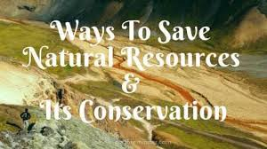

Need To Save Our Natural Resources
Natural resources are the foundation of life on Earth. They include water, air, soil, minerals, forests, and fossil fuels. We depend on these resources for food, shelter, energy, and everyday needs. However, human activities are depleting these resources at an alarming rate. Overuse, pollution, and deforestation are causing serious environmental problems. If we don’t act now, future generations may face severe resource shortages.
Loss of resources can lead to health issues, poverty, and even worsen climate change. Saving resources is important to protect ecosystems and maintain biodiversity. It also supports economic growth and sustainable development. Simple steps like conserving water and electricity can make a big difference in saving resources.
Recycling, reusing, and reducing waste are powerful habits that everyone can adopt. Using renewable energy sources like solar and wind can help preserve non-renewable fuels. Education and awareness are key to encouraging responsible behavior. Everyone—governments, businesses, and individuals—must take part in saving resources. By saving resources today, we secure a better, greener future for all.
